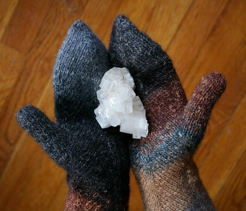

|
||
Premium Patterns Wintry Mix Mitts Love Bytes HawkeyeFree Patterns Kiddie Cadet Summerlin Ruffled Scarf Seamless DS Sock Simply Seamless Pouch Myriads of MushroomsExtras DIY Mitten Blocker Felt Patch Tutorial Yarn Dyeing Tutorial Needle Pouches Knitting Journal |
January 20, 2008 - Posted by Grace SchneblyMitered Mittens Project Specs The pattern is literally a paragraph long, and in true EZ style, you as the knitter are left to make a lot of decisions. I actually started these mittens several times, trying to figure out exactly how I wanted them to look. I knit an entire mitten on size 5 needles with an afterthought thumb as suggested in the pattern, but it wasn’t working for me at all. The afterthought thumb really caused the palm fabric to pull, distorting the stitch pattern. It wasn’t very comfortable either. I frogged that one and reknit the mitten adding a thumb gusset to the edge. In my opinion, it was a much better solution, and this way you can try the mitten on as you’re working to ensure that you’ve got the perfect fit. So here’s exactly what I did… First I knit 5 rounds of garter stitch and then continued in the mitten pattern for 27 rows (this created an extra long cuff which I love, but you can always work less rounds here for a normal length cuff). Next I worked the thumb as follows: Round 1: m1, k to end Continue in this manner by knitting gusset stitches on miter pattern rows, and increasing one stitch on both sides of the gusset stitches on plain knit rows. Stop once you have increased to 15 thumb gusset stitches. Place these 15 sts on a piece of waste yarn, then continue by working mitten as stated in the pattern. Finish tip of fingers by threading tail through the remaining 8 stitches and pull tight (I also tried Kitchener stitch and it looked better the other way). Transfer thumb stitches to double pointed needles. Pick up one extra stitch from where the thumb meets the palm. You will have a total of 16 stitches on your needles. Knit thumb until it is you desired length, k2tog every stitch on last round, break yarn and thread through stitches. I’d definitely recommend knitting these from Noro Silk Garden. The wide stripes really accentuate the mitered pattern, and I love how both mittens are different but you can definitely still tell they’re a pair. The #47 colorway has to be my favorite Noro color combination of all time. The colors are so rich and earthy! For some reason this colorway is a lot softer than the #228 colorway I used for my Clapotis. I ran into maybe one twig the entire time I was knitting these mittens! The yarn is pretty fuzzy too which may mean that it has a higher mohair content than usual. You could knit a pair of mittens out of one skein if you shortened the cuff, so it is a great choice for stash busting or would be easy on your wallet. I really really love how these mittens turned out!! They’re simple, soft, warm, and, in my opinion, pretty classy! I thought about making these last year, but just never had the time to cast on. They knit up so quickly and easily, that they’d make great gifts too. I’d highly recommend this pattern to anyone! |
   Recent ReviewsRecent Posts
 Our Favorites
|
| © 2007 KathrynIvy.com | ||
{kind=link}
{kind=link}